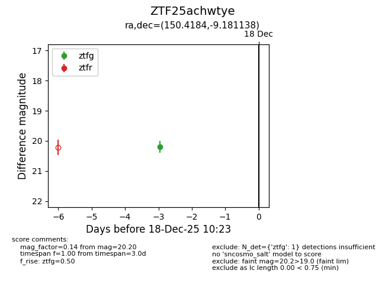
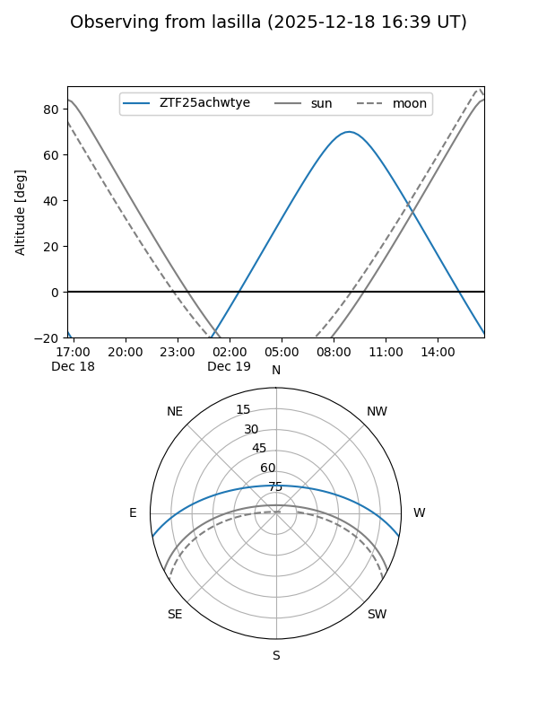
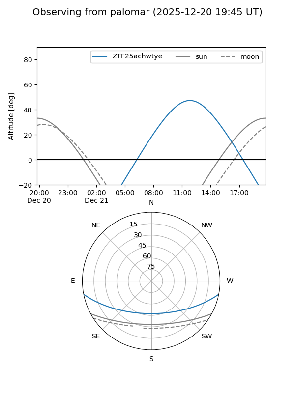
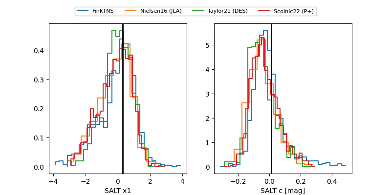

ZTF25achwtye
Target ZTF25achwtye at 2025-12-21 12:12
Aliases and brokers:
FINK: fink-portal.org/ZTF25achwtye
Lasair: lasair-ztf.lsst.ac.uk/objects/ZTF25achwtye
ALeRCE: alerce.online/object/ZTF25achwtye
alt names
ZTF25achwtye (ztf,fink_ztf)
Coordinates:
equatorial (ra, dec) = 150.4184,-9.18114
equatorial (HMS+DMS) = 10:01:40.41,-09:10:52.10
galactic (l, b) = (248.3754,+35.14281)
Flags:
Photometry:
last ztfg=20.20, ztfr=20.14
1 ztfg, 1 ztfr detections
Lightcurve

Visibility


Additional plots
